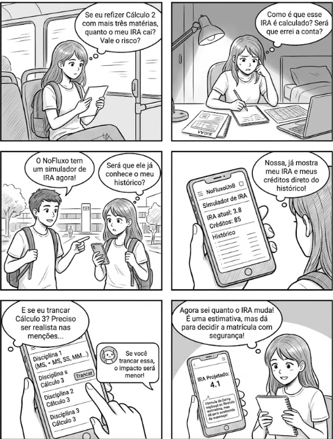
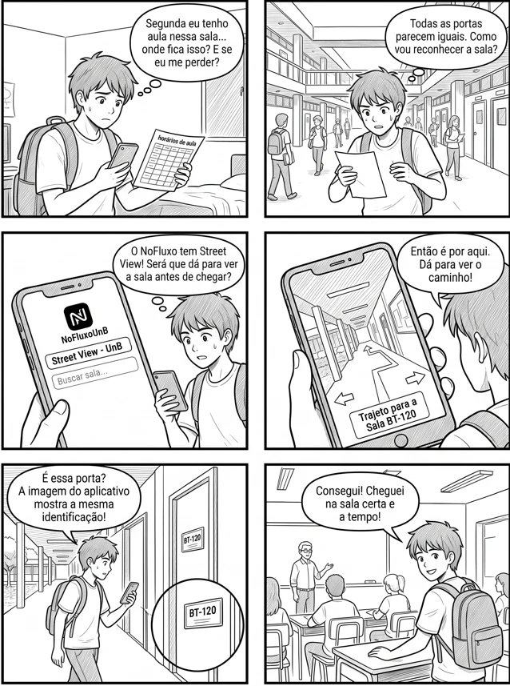

Storyboard: enredo
Autor: Matheus do Vale Lameira, matrícula 202070064 · Validador: Matheus do Vale Lameira
Funcionalidades: Simulador de IRA e Street View · Conteúdo desta página: seção 2 · Figuras dos storyboards do Simulador de IRA e do Street View
Documento completo em PDF: Baixar Grupo2MatheusdoValeEtapa5SimuladorIRAStreetView_Final.pdf
Outros artefatos do autor: Visão geral e funcionalidades · Análise de tarefas: HTA e CTT · Planejamento da avaliação do storyboard e da análise de tarefas · Relato dos resultados da avaliação do storyboard e da análise de tarefas · Planejamento da avaliação do protótipo de papel · Planejamento do relato dos resultados do protótipo de papel · Anexos A a C: termo, questionário e instruções · Anexos D a G: roteiro, formulário, ficha e cartões
2. Storyboard: enredo
Montei o enredo com os elementos de um cenário descritos no livro: ambiente, ator, objetivo, planejamento (o que o ator pensa), ações, eventos e avaliação (p. 183 e 184). Cada história começa fora do computador: o primeiro quadro mostra a necessidade do aluno e o que ele pensa sobre ela, e o segundo mostra como ele tenta resolver sem a funcionalidade. O NoFluxo é citado a partir do terceiro quadro, e a tela do aplicativo aparece no quarto quadro do Simulador de IRA e no terceiro do Street View. Cada história tem seis quadros. Desenhei os dois storyboards no Adobe Fresco, com uma mesa digitalizadora de 5080 lpi.
2.1 Simulador de IRA
Ator: Larissa Mendes, 21 anos, 5º semestre de Engenharia de Software, reprovou em Cálculo 2. Ambiente: semana de matrícula do próximo semestre; ela faz quase tudo pelo celular no trajeto entre o campus e a casa. Objetivo: decidir o que cursar sabendo o efeito no IRA. Necessidade: saber se refazer Cálculo 2 junto com outras disciplinas derruba o seu IRA, antes de se matricular.
| Nº | Cena e ambiente | Pensamento ou necessidade | Ação | Evento | Avaliação |
|---|---|---|---|---|---|
| 1 | Larissa no ônibus, voltando do campus, na semana de matrícula, com a lista das disciplinas do próximo semestre. | “Se eu refizer Cálculo 2 com mais três matérias, quanto o meu IRA cai? Vale o risco?” | Olha a lista e pensa. | A semana de matrícula está acabando. | Percebe que não sabe responder. |
| 2 | Em casa, à noite, com o histórico impresso do SIGAA, uma planilha aberta e o caderno. | “Como é que esse IRA é calculado? Será que errei a conta?” | Soma os créditos e tenta calcular o IRA com as menções que imagina. | O resultado muda a cada tentativa. | Conclui que não confia no número que calculou. |
| 3 | Larissa, no campus, com um colega que diz que o NoFluxo tem um simulador de IRA. Ela pega o celular. | “Será que ele já conhece o meu histórico?” | Ouve o colega e pega o celular. | O colega indica o simulador de IRA do NoFluxo. | Fica curiosa e quer saber se o simulador usa o histórico dela. |
| 4 | Larissa olha a tela do Simulador de IRA, com o IRA atual, os créditos e o histórico. | “Nossa, já mostra meu IRA e meus créditos direto do histórico!” | Abre o Simulador de IRA e lê o IRA atual (3,8) e os créditos (85). | O simulador mostra o IRA atual e os créditos, vindos do histórico importado. | Reconhece os próprios dados, sem digitar. |
| 5 | Tela do simulador, com as disciplinas, as menções, o botão Trancar e a Darcy ao lado. | “E se eu trancar Cálculo 3? Preciso ser realista nas menções...” | Escolhe as menções das disciplinas e toca em Trancar em Cálculo 3. | A Darcy comenta: “Se você trancar essa, o impacto será menor!” | Vê que o simulador aceita as menções e o trancamento e que a Darcy comenta o impacto. |
| 6 | Larissa com o celular mostrando o IRA projetado e a explicação da Darcy, e o caderno na mão. | “Agora sei quanto o IRA muda! É uma estimativa, mas dá para decidir a matrícula com segurança!” | Lê o IRA projetado (4,1) e a explicação da fórmula e anota no caderno. | O sistema calcula o IRA projetado; a Darcy explica a fórmula como estimativa. | Decide a matrícula com segurança: objetivo atingido. |

Fonte: Matheus do Vale Lameira (2026).
2.2 Street View
Ator: Caio Ferreira, 18 anos, calouro de Ciência da Computação. Ambiente: primeira semana de aula, em um campus que ele não conhece, com o horário da primeira aula e a sala informada por código. Objetivo: chegar à sala certa da primeira aula a tempo. Necessidade: saber onde fica a sala e como reconhecê-la.
| Nº | Cena e ambiente | Pensamento ou necessidade | Ação | Evento | Avaliação |
|---|---|---|---|---|---|
| 1 | Caio em casa, domingo à noite, olhando o horário da primeira aula e a sala indicada. | “Segunda eu tenho aula nessa sala... onde fica isso? E se eu me perder?” | Olha o horário e pensa. | A primeira aula é na manhã seguinte. | Percebe que não sabe onde fica a sala. |
| 2 | Segunda de manhã, no campus, com o horário na mão, entre prédios parecidos e vários corredores. | “Todas as portas parecem iguais. Como vou reconhecer a sala?” | Procura placas e pergunta a colegas. | Faltam dez minutos para a aula. | Percebe que está perdido e quase atrasado. |
| 3 | Caio pega o celular, abre o NoFluxo e entra no Street View (primeira tela do NoFluxo). | “Será que dá para ver a sala antes de chegar?” | Abre o Street View e informa a sala procurada. | O sistema mostra onde a sala fica. | Vê que a sala foi encontrada. |
| 4 | Tela do Street View com o trajeto até a sala. | “Então é por aqui. Dá para ver o caminho.” | Percorre o trajeto no Street View e observa o entorno. | A imagem se atualiza conforme ele avança. | Reconhece pontos do entorno e se situa. |
| 5 | Caio no corredor, com o celular na mão, comparando a tela com a porta à sua frente. | “É essa porta? A imagem mostra a identificação da sala.” | Reconhece a entrada e a identificação da sala e confirma que é a procurada (se não for, volta à busca). | A identificação da porta coincide com a do Street View. | Sabe que é a sala certa. |
| 6 | Caio entra na sala, senta e a aula começa. | “Cheguei na sala certa, a tempo.” | Entra e senta. | A aula começa. | Objetivo atingido, sem constrangimento. |

Fonte: Matheus do Vale Lameira (2026).
Histórico de versão
| Versão | Data | Descrição | Autor(es) | Revisor(es) | Declaração de ferramenta de IA |
|---|---|---|---|---|---|
| 1.0 | 23/10/2026 | Publicação de Storyboard, enredo, a partir do documento Grupo2MatheusdoValeEtapa5SimuladorIRAStreetView_Final, sem alteração do conteúdo | Matheus do Vale Lameira | A definir (validação pendente) | Claude (Anthropic): estruturação da página no padrão da Entrega 5 e revisão da estrutura; o conteúdo é do autor |